Meta
May 2026 – Dec 2026Research Scientist Intern, Menlo Park, CA
LLM post-training for recommendation and long-horizon LLM agents. First author of When History Misleads.
PhD student, Duke University
Research Scientist Intern, Meta
I'm a third-year PhD student at Duke University, advised by Prof. Yiran Chen. I'm currently a research scientist intern at Meta and was previously a research intern at Zoom. Before Duke, I received my B.E. in Computer Science from the School of the Gifted Young at University of Science and Technology of China in 2024.
* equal contribution † corresponding author
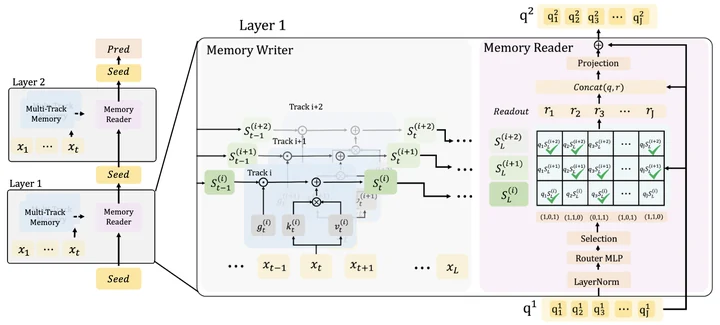
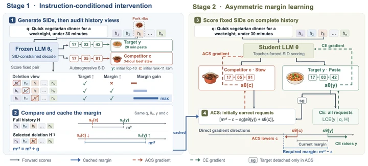
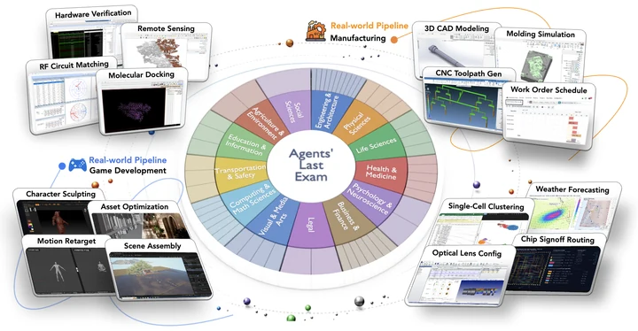
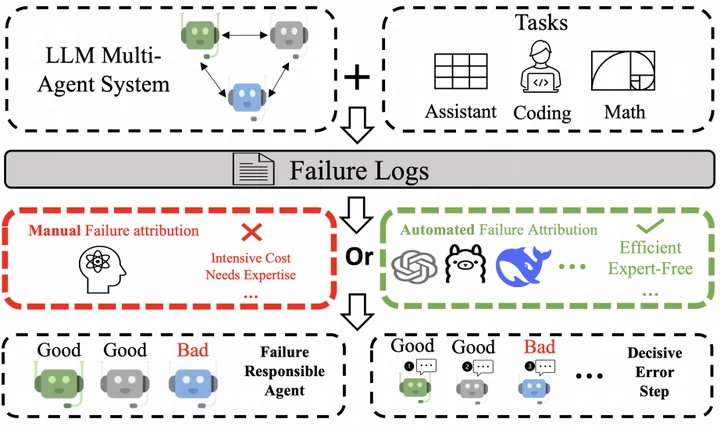
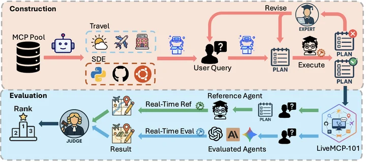
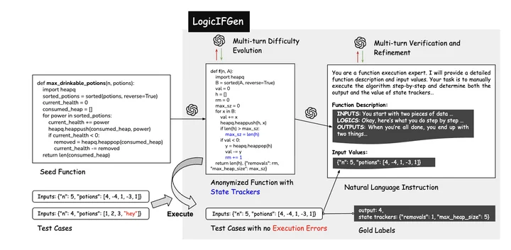
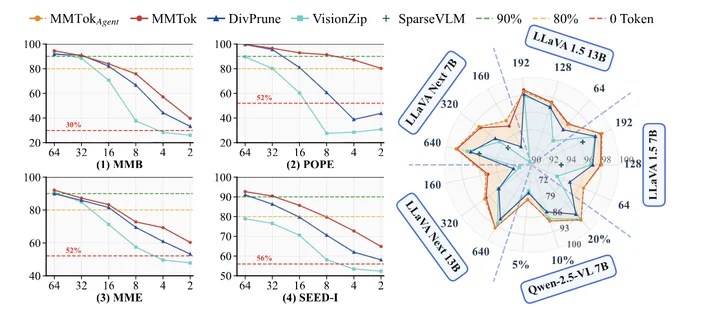
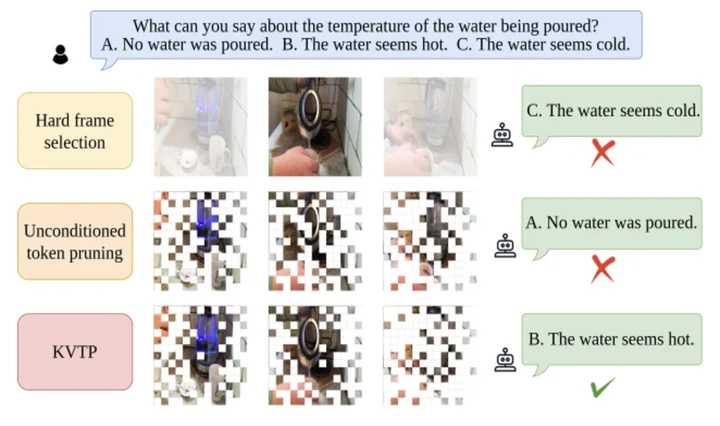
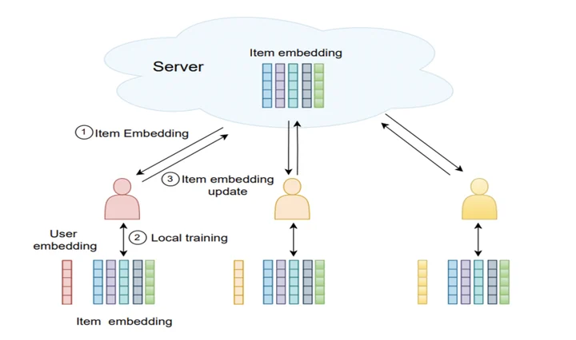
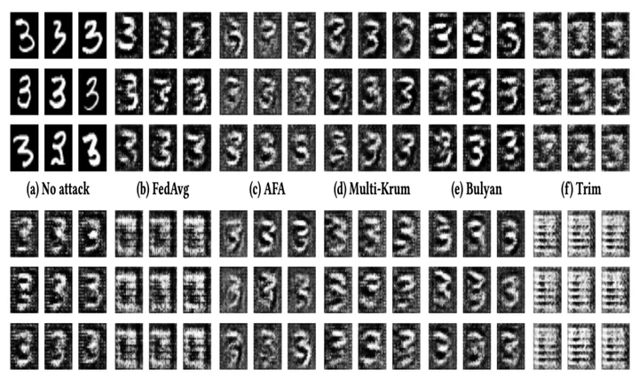
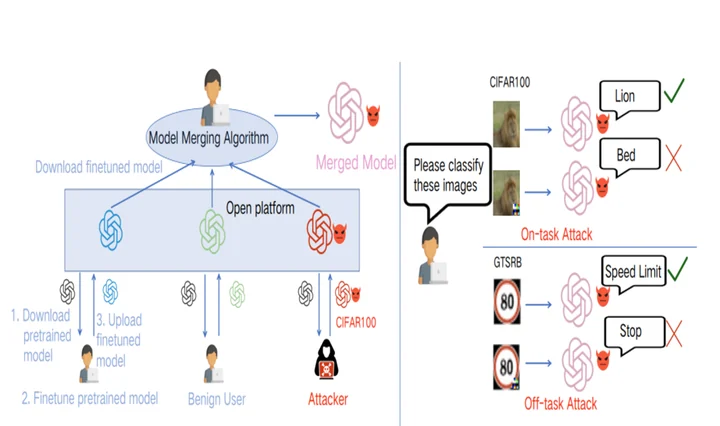
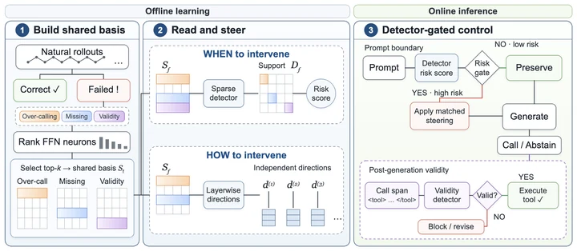
Research Scientist Intern, Menlo Park, CA
LLM post-training for recommendation and long-horizon LLM agents. First author of When History Misleads.
Research Intern, Seattle, WA
Agent tool calling and the Model Context Protocol (MCP). Led LiveMCP-101, a benchmark of 101 real-world queries that need multi-step use of MCP tools across 41 servers and 260 tools.
Ph.D. in Electrical and Computer Engineering
Advisor: Prof. Yiran Chen
B.E. in Computer Science, School of the Gifted Young
Advisor: Prof. Weiming Zhang
Conference reviewer: NeurIPS, ICML, ICLR (2024–present)
Journal reviewer: IEEE Transactions on Dependable and Secure Computing (TDSC)
Teaching assistant: ECE 661, Computer Engineering Machine Learning and Deep Neural Nets, Duke, Fall 2025